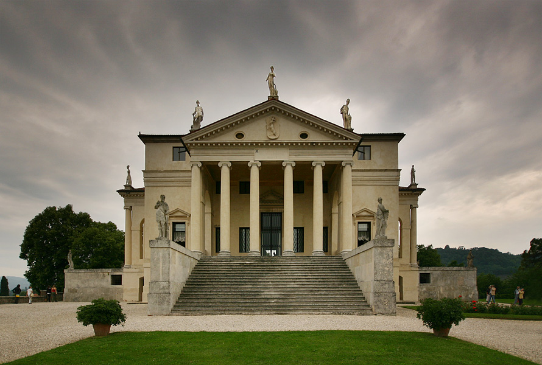

Posłaniec boskiej harmonii
Pięćset lat temu we włoskiej Padwie przychodzi na świat Andrea di Pietro della Gondola, czyli Andrea Palladio.
Autor monumentalnego traktatu „Quattro Libri dell’architettura”. Twórca budowli, które odmieniły oblicze historii architektury. San Giorgio Maggiore oraz Il Redentore, Wenecja; Palazzo della Ragione (Basilica Palladiana), Palazzo Valmarana oraz Theatro Olimpico, Vicenza; Villa Barbaro, Maser.
Villa Rotonda, o której Goethe powie: „Chyba nigdy sztuka budowlana nie osiągnęła większego przepychu”. A także Villa Foscari, zwana La Malcontenta, która wedle relacji księżnej Marie von Thurn und Taxis («Wspomnienie o Rainerze Marii Rilkem») wywarła na Rilkem niezapomniane wrażenie:
Jakimże wzruszeniem przejmował go widok opustoszałych willi w dolinie Brenty, przede wszystkim tej jednej, o wysokich kolumnach, zwanej «La Malcontenta», budowli zaiste odosobnionej i posępnej, którą pewien wenecki szlachcic polecił wznieść dla swej córki — skłonnego do melancholii dziewczęcia o imieniu Malcontenta. I znów mógł Rilke do woli snuć marzenia o tej pięknej, przygnębionej smutkiem patrycjuszce.